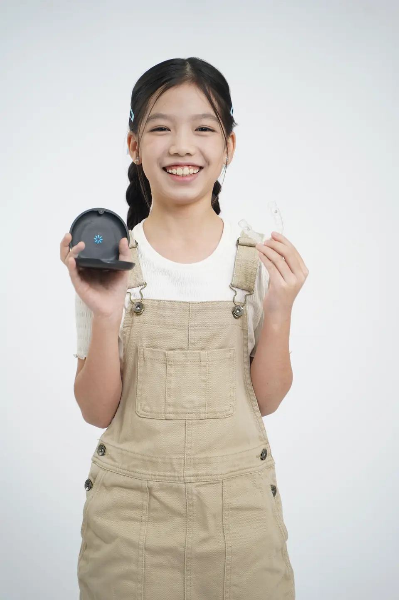
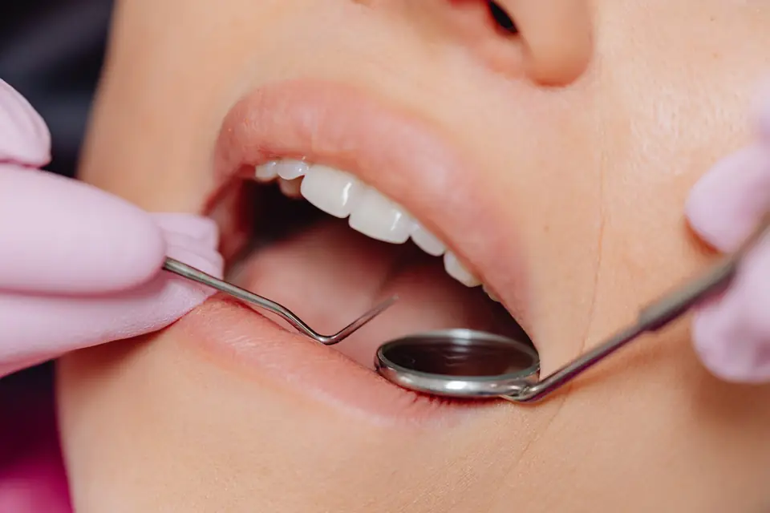
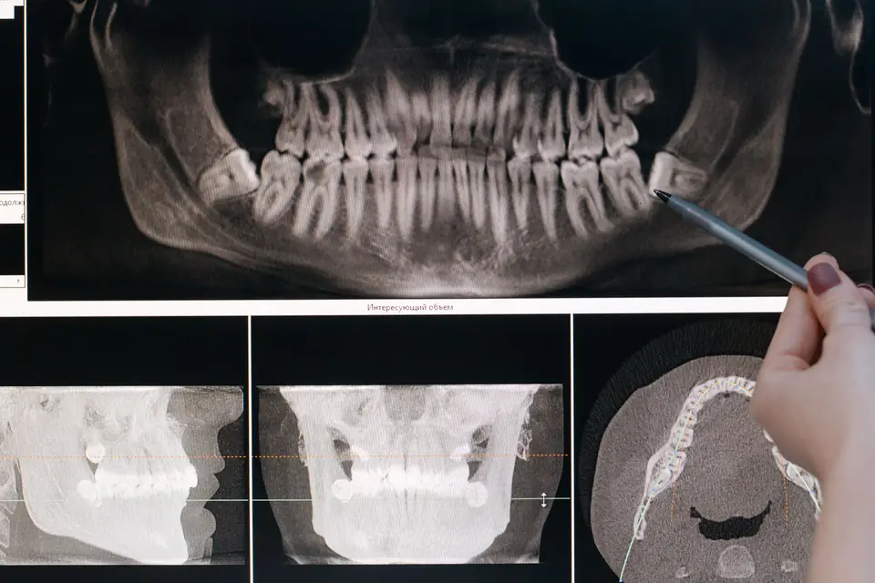
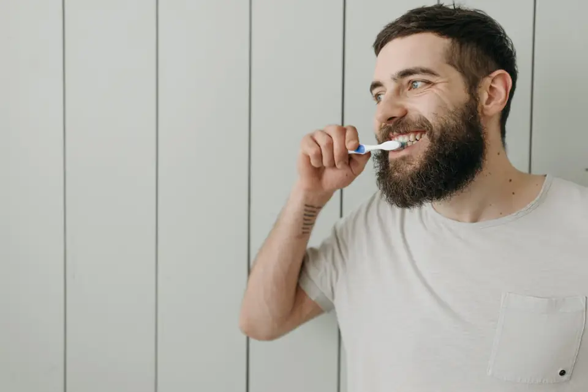
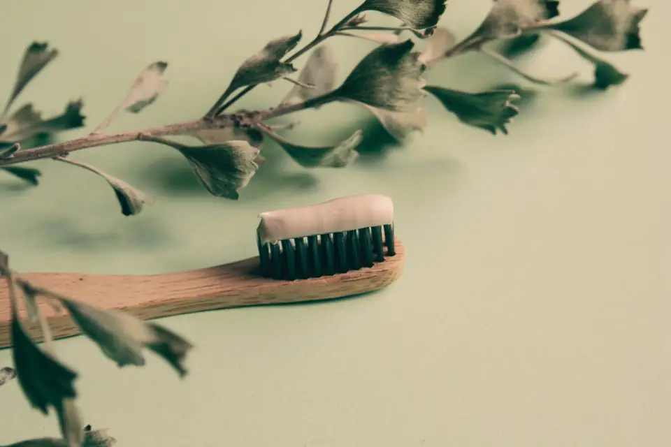
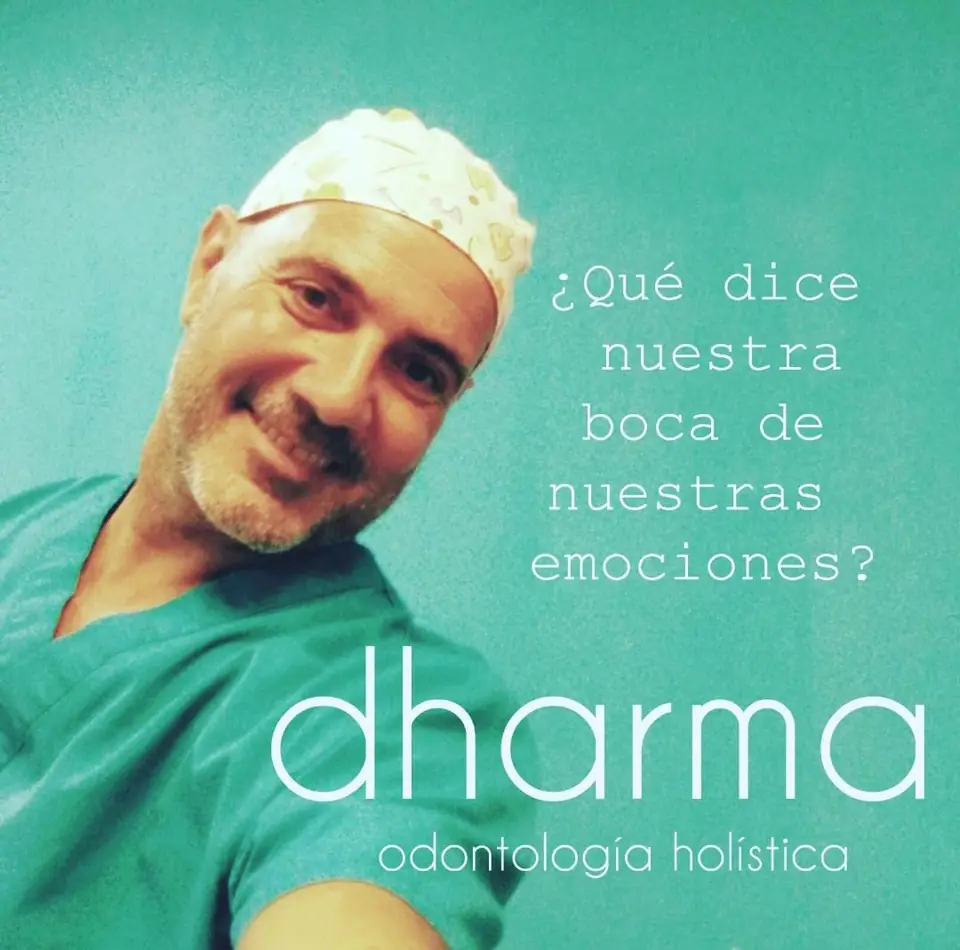

Tu clínica dental holística en Santa Cruz de Tenerife
Más de 25 años tratando la boca sin dejar de lado tu salud general, tus emociones y tu entorno. Materiales biocompatibles y anestesia libre de tóxicos.
O llámanos al 822 70 90 25
- +25 añosde odontología holística
- Sin tóxicosmateriales biocompatibles y anestesia libre de tóxicos
- Sin metalimplantes de zirconio
- Equipo completoodontólogos, fisioterapeutas y osteópatas
Tratamientos personalizados para sonrisas únicas
Cada tratamiento es un diálogo con tu cuerpo. Escuchamos lo que necesitas, sin excesos ni sobretratamientos.
Odontología Holística
Tu salud bucal sin dejar de lado tu salud general, los aspectos psicológicos y tu entorno.
Ver tratamiento →
Dentosofía
Ortodoncia holística con activadores: dientes alineados de forma consciente e indolora.
Ver tratamiento →
Extracción de Amalgamas
Retiramos los empastes de mercurio con un protocolo que te protege de los gases tóxicos.
Ver tratamiento →
Rehabilitación Holística
Implantes de zirconio y prótesis sin tóxicos, teniendo en cuenta tu postura y tu articulación.
Ver tratamiento →Odontopediatría
Odontopediatras especializados que adaptan poco a poco a los niños a la consulta.
Ver tratamiento →
Terapia Gingival
Tratamiento de encías combinado con dieta, suplementos y técnicas para reducir el estrés.
Ver tratamiento →Estudio de la oclusión dental
Estudio ocluso-postural para que tus dientes encajen y tu postura lo note.
Ver tratamiento →Diseño de Sonrisas Conscientes
Una sonrisa más natural a partir de un estudio de la armonía de tu rostro.
Ver tratamiento →
Coaching Dental Holístico
Acompañamiento personalizado para tu salud bucal y tu bienestar general.
Ver tratamiento →
Miramos a la persona, no solo a los dientes
Esto nos permite ofrecerte una atención individualizada y concentrarnos en solucionar el problema dental de forma permanente. Empezamos siempre con una evaluación integral de tu salud.
Nuestro objetivo es optimizar tu salud a través de la odontología, evitar tratamientos innecesarios y relacionar la salud de todo tu ser con tu boca.
Así de fácil es empezar
Pide tu cita
Por WhatsApp o por teléfono, en el día y la hora que mejor te vengan.
Evaluación integral
Escuchamos lo que te preocupa y valoramos tu salud bucal junto a tu salud general.
Tu plan personalizado
Te explicamos qué necesitas, y solo eso: sin excesos ni sobretratamientos.

Conócenos
Somos un centro de odontología holística donde llevamos más de 25 años tratando la boca y sus dolencias con una visión diferente, que reconoce la conexión entre todos los aspectos del ser humano: físico, emocional, mental y espiritual.
No solo tratamos los síntomas: buscamos las causas y te acompañamos hacia un estado de equilibrio. En la clínica trabajamos juntos odontólogos, odontopediatras, fisioterapeutas y osteópatas.
Tu sonrisa sin preocupaciones: solo usamos materiales biocompatibles y anestesia libre de tóxicos.
Lo que más nos preguntáis
¿Cómo pido cita?
Pulsa «Reservar cita», escríbenos por WhatsApp al 617 87 86 81 o llámanos al 822 70 90 25. Te damos cita en el día y la hora que mejor te vengan.
¿Qué es la odontología holística?
Es una forma de tratar la boca mirando a la persona en su totalidad: tu salud general, tus emociones y tu entorno. Buscamos la causa del problema para solucionarlo de forma duradera, sin excesos ni sobretratamientos.
¿Qué materiales utilizáis?
Solo materiales biocompatibles y libres de tóxicos, anestesia libre de tóxicos e implantes de zirconio, sin metal. Antes de usarlos podemos testar contigo cuáles son los más adecuados.
¿Atendéis a niños?
Sí. Nuestros odontopediatras adaptan poco a poco a los niños a la consulta, mediante el juego y con un lenguaje que entienden.
¿Podéis retirar mis empastes de mercurio?
Sí. Retiramos las amalgamas siguiendo el protocolo de extracción segura de la IAOMT, que protege al paciente y al profesional de los vapores de mercurio.
¿Dónde estáis?
En la Calle Corales, 15, bajo izquierda, 38005 Santa Cruz de Tenerife.
Pide tu cita
Reserva tu cita, escríbenos por WhatsApp o llámanos. Te respondemos en horario de clínica.
| Lunes a jueves | 9:00 – 19:00 |
|---|---|
| Viernes | 9:00 – 13:00 |
| Sábado y domingo | Cerrado |
- Teléfono: 822 70 90 25
- Móvil y WhatsApp: 617 87 86 81
- Email: clinicadentaldharma@gmail.com
Calle Corales, 15, bajo izquierda
38005 Santa Cruz de Tenerife